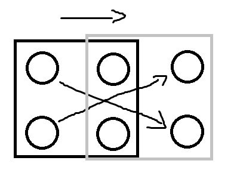
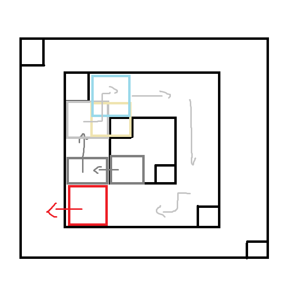

Grand Prix of Urals 赛后小结
比赛链接：https://qoj.ac/contest/975?v=1
开头 A, L, G 三道签到题，很快的过了。
后面 I 又不知道被谁秒了。
然后是 M ，我想的是用数据结构维护，但是感觉怎么写怎么难写，后面 imakf 下机后跟他交流了一下，他给出了一种更加好写的写法，直接遍历，然后括号就是调整遍历的顺序（从左到右或者从右到左），也就是在 $()$ 里面的话，遍历顺序转一下（引用群友的一句话：为啥我就想不到呢。恼，这样确实好些多了）。
感觉能这样做一个很关键的原因是翻转操作是嵌套的，没有相交不包含的情况，学到了。
后面 C 被队长秒了，做法是类似可持久化，每次 fuse 就新建一个节点，指向那两个拼起来的节点，太对了。
后面的 B 和队长交流了下，后面队长开始口胡，我听着听着发现他的做法讨论一下就对了，然后讨论了下上机过了。
下机后想了想 D ，发现 $n^2$ 可能没有特殊含义，只是方便分解质因数，又有 $(x+y)(x^2-xy+y^2)=x^3+y^3$ ，所以枚举 $x+y$ ，然后二次函数求解就行了。
队长上去秒了 F 。
然后开始进入超长待机，我开始玩 K ，队长写 J ，imakf 写 E ，玩得太入迷了，其实没怎么注意发生了什么，只知道出题人卡空间。
最后在结束前半个小时，E J 过了，我声称我写不出来了，队长上去 try H ，失败了，最后 20 min 我上去写暴力，结果发现小范围很快跑出解了，在赛后 20 min 过了此题。
反思一下我的问题：
- 首先我高估了代码复杂度，其实 K 想清楚有可能半个小时写出来。
其次我 K 的做法其实在剩一个半小时的时候就给出来了，后面其实贡献基本为 $0$ ，一直没玩出来小范围的解，同时也没给出其余好的搞法，其实我确实应该想想暴力怎么写，上去要 15 min 的机时，显然有暴力和没暴力玩这道题目是两回事，而且如果直接过了收益很高，没过这个暴力在后面魔改一下也能尝试别的做法，而且如果是一时半会跑不出解的，更能多挂一会，说不定出解了，总之，多出来的这些选择都是需要写暴力才有的，15 min 的机时就能换回这么多东西，我认为是血赚的，至少我认为 15 min 机时换我手玩暴力的时间绝对是血赚的，感觉我在手玩暴力的时间其实和挂机没有区别，而且写了暴力最后通过 K 的概率直线上升，真得写暴力吧，而且中间队友也红了，他们的机上效率也没有拉满，让他们下来冷静一下也合理。
所以真得上机写个暴力吧，我感觉我没要还有一个原因就是我压根没觉得能过 K ，恐惧了，给吓到了。只能说不尝试怎么知道，没有梦想怎能成功。
我对机时的理解还是太差了，队长来肯定就直接赶人了。
队长伟大，无需多言。
这里放一下 K 的某个可行做法：
首先队长给出观察：穿越可以让你原路返回，所以只需要找哈密顿路径。（当时不觉得这关键，但是最后成了关键一步，队长伟大，无需多言）
然后开始手玩的过程中，开始想把问题规模缩小，发现没法完美缩小，因此尝试在加一些限制的情况下缩小（即缩小后的问题是比原题更加强的问题），然后又注意到只看一个棋子的话，马的行走路径非常的 shit ，玩的非常痛苦。
突然注意到 $2*2$ 的矩阵移动是非常方便的：

所以通过 $2*2$ 的矩阵的移动，可以轻松构造出 $4$ 条路径，希望能用这 $4$ 条路径走遍大部分的格子，然后剩下的一小部分格子直接暴力。
显然的，希望这四条路径起终点在 $m*m$ 的网格内，而且外面的点都被经过了，$m$ 很小。
但发现好像不镜像的话，完成这个事情有点苦难，于是用到了队长的话，我们不妨只考虑遍历完外面的点，然后镜像原路返回，那么起点就是四个格子，终点就是这四个格子的镜像，子问题是要求在这 $mm2-4$ 的格子内存在哈密顿路径，且必须经过这四个格子跑到镜像的这条边（这条边就是前面四条路径的压缩）。
遍历方式：

每次都从一个矩形右下角的 $2*2$ 矩形出发，出去扫一圈，两个角落的移动要特殊处理一下，因为 $(1,1),(n,n)$ 被 ban 了，所以所有的圈扫一起来都要在这两个对应的角落特殊处理一下。
最后停在 $n*n$ 矩形的左下角，镜像跑回来就行了。
当 $m=4,6$ 的时候，子问题很快就跑出解了，然后就做完了。
时间复杂度：$O(nm+\mathrm{暴力时间})$ 。
1 |
|
H 认输，不会，先不说会不会，这种类型的题目我几乎就没有熟练度，非常的捞，你猜我为什么玩了一整场 K 。
所以我还有一个很严重的问题，真得多练 H 这种题吧，不可能每次都丢给队友吧，真得多练吧，加训！狠狠的加训！菜就多练。